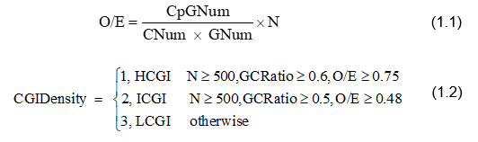
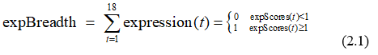
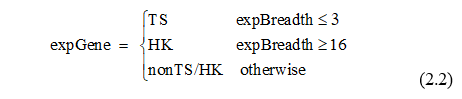

Introduction of CGIDLA
CGIDLA is an online service website for CpG island related density and LAUPs analysis that hosts LAUPs and provides users with CpG island related analysis functions. CGIDLA provides analysis service to investigate the relationship among the CpG islands density, TATA-box feature and expression breadth of human genes. Also, it deposits 32 representative species, including bacteria, humans, and animal plants, and offers data analysis service for LAUPs within the dataset. Moreover, CGIDLA provides the source code download service and the related K-mer counting functions.

How to annotate CpG island density?
we annotate all human CpG island into three categories: HCGI(high-density CpG island) , ICGI(intermediate-density CpG island) and LCGI(low-density CpG island)[1]. We compute the observe/expectation value (O/E) for each CpG island by Eq. 1.1[2], then annotate each CpG island density by Eq. 1.2.
How to annotate CpG+/- genes?
Referring to previous studies[3, 4],we annotate the protein-coding gene that at least one of its transcriptional start sites (TSSs) is located in CpG island as CpG+ gene,othwise annotate as CpG-.
How to annotate TATA+/- genes?
Referring to previous studies[3, 4],we annotate the protein-coding gene that at least one of its TSSs contains TATA-box in the upstream [-50, -10] region as TATA+ gene,othwise annotate as TATA-.
How to compute tissue expression breadth?
First, we denote gene expression breadth (expBreadth) as how many tissues have the gene been expressed[3] as Eq. 2.1 Then, we computed the expression breadth for every protein-coding genes of human.

where t represents the index of tissues, expScores (t) is the expScores value for nth tissue[5]. We select 18 representative tissues (Fig. S2), and use one as the threshold to evaluate if gene is expressed for tth tissue regarding to the previous studies[5,6]. Also, we employ the definition of Zhu et al., [4] to denote the expGene, which consists of tissue-specific genes (TS) and housekeeping genes (HK) and nonTS/HK genes by Eq. 2.2.
[1] WEBER M, HELLMANN I, STADLER M B, et al. Distribution, silencing potential and evolutionary impact of promoter DNA methylation in the human genome [J]. Nature Genetics, 2007, 39(4): 457-66.
[2] GARDINERGARDEN M, FROMMER M. CpG islands in vertebrate genomes [J]. Journal of Molecular Biology, 1987, 196(2): 261-82.
[3] ZHU J, HE F, HU S, et al. On the nature of human housekeeping genes [J]. Trends in Genetics Tig, 2008, 24(10): 481.
[4] ZHU J, HE F, SONG S, et al. How many human genes can be defined as housekeeping with current expression data? [J]. BMC Genomics, 2008, 9(1): 172.
[5] G G. Human genetics. GTEx detects genetic effects [J]. Science, 2015, 348(6235): 640.
[6] KUBICEK S, DIMOND A. The Genotype-Tissue Expression (GTEx) project [J]. Nature Genetics, 2013, 45(6): 580-5.
What's LAUPs?
we empirically define sequences permutations that never exist in any wellknown public databases as lineage-associated underrepresented permutations (LAUPs).
How to compute LAUPs?
The workflow for the LAUPs counting procedure is :

How to analysis LAUPs?
(1) Content analysis: We compute the CG and AT content proportion as well as purine (AG) and pyrimidine (TC) content proportion of LAUPs. And we employ statistical test process to validate whether these is the content statistical significance between CG and AT as well as the difference between purine (AG) and pyrimidine (TC) for LAUPs.
(2) Motif analysis process: Sequence motifs are short, recurring patterns in DNA sequences with potential biological function. Here we employ a motif search tool, MEME to look for frequently-occurred or common patterns for various species from LAUPs.
(3) CpG-containing sequences analysis: It investigates the CG occurring frequency between LAUPs and CpG-containing sequences.
What LAUPs Mean?
The present discoveries of LAUPs include[7]:
(1) Lengths for the shortest LAUPs, ranging from 10 to 14, which collectively constitute a low proportion of the genome.
(2) Common LAUPs showing higher CG content over the analysed mammalian genome and possessing distinct CG*CG motifs.
(3) Neither CpG-containing LAUPs nor CpG island se-quences are randomly structured and distributed over the genomes; some LAUPs and most CpG-containing sequences exhibit an opposite trend within the same k and n variants.
These discoveries suggesting the existence of strong sequence or sequence motif selections, preserving or excluding some of the permutations and patterns within, which may serve as unique motifs for both trans and cis regulations, which are typically involved in protein-based recognition and/or chromosomal structural conformation, respectively.
[7] ZHANG L, XIAO M, ZHOU J, et al. Lineage-associated underrepresented permutations (LAUPs) of mammalian genomic sequences based on a Jellyfish-based LAUPs analysis application (JBLA) [J]. Bioinformatics, 2018, 34(21): 3624-30.
Here, we provide some tools for LAUPs calculation and analysis, please click on the left banner to see the details.
For guide document, please check:Guide document